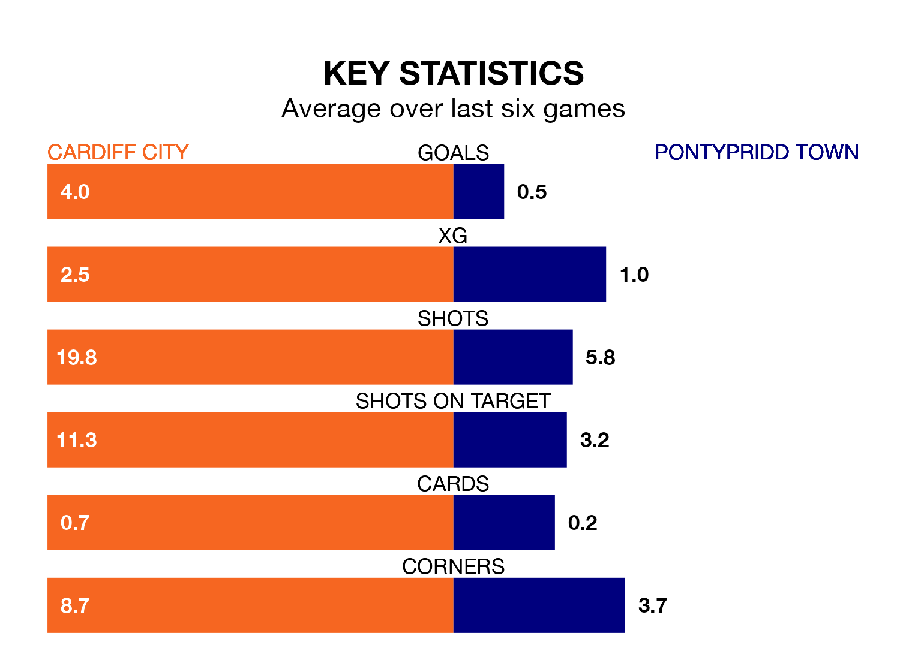

Relegation candidates Pontypridd Town face a challenge away against high-flying Cardiff City on Sunday.
Pontypridd Town are rooted to the bottom of the Welsh Premier Women's League table, and have picked up no wins and one draw in their 11 games to date.
Cardiff, meanwhile, are top of the standings with 31 points, having won 10 and drawn one.
With 38 goals in 11 games so far this season, Cardiff are the league's highest scorers with 3.5 goals per game. And they are conceding fewer than average, letting in four goals at a rate of 0.4 per game.
Pontypridd, meanwhile, are below average scorers, with 0.5 goals per game, compared to a league average of 1.8. They have conceded 2.5 goals per game.
City are in exceptional form in Welsh Premier Women's League, with six wins and no losses from their last six games.
With no wins and a draw over that period, Town's form is much worse – they have taken one point from 18, compared to the home side's 18.
In the last five years, Cardiff and Pontypridd have played each other on five occasions. Cardiff won four of them and they drew once.
On average, Cardiff scored 2.8 goals and Pontypridd 0.6 in those matches.
Their last meeting was on October 22, when Cardiff won 5-1 away.
Cardiff's last match was on Sunday, a 3-0 win against Wrexham Women, with getting the goals for Cardiff.
Pontypridd lost 2-1 against Swansea City last time out, also on January 21, with on the scoresheet.
Updated: 09:18 (UTC), 23/01/24